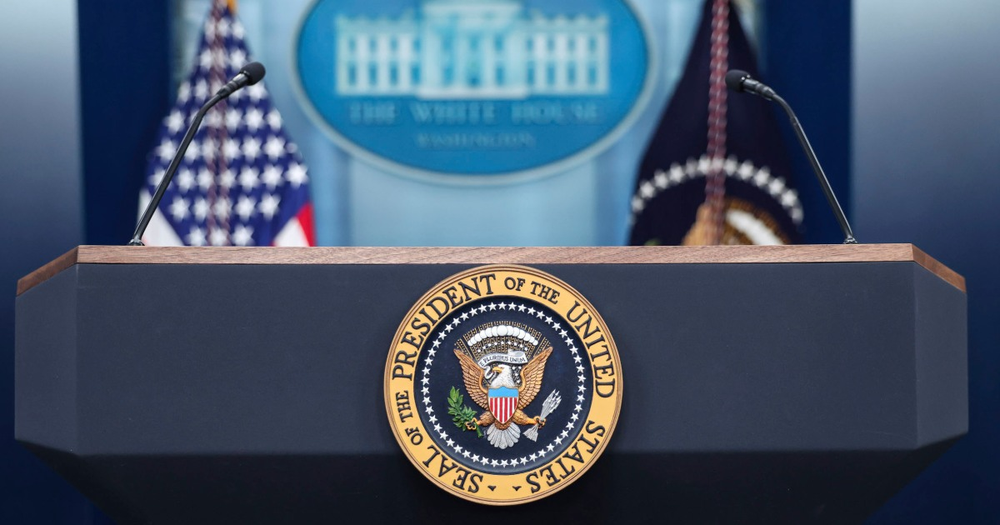
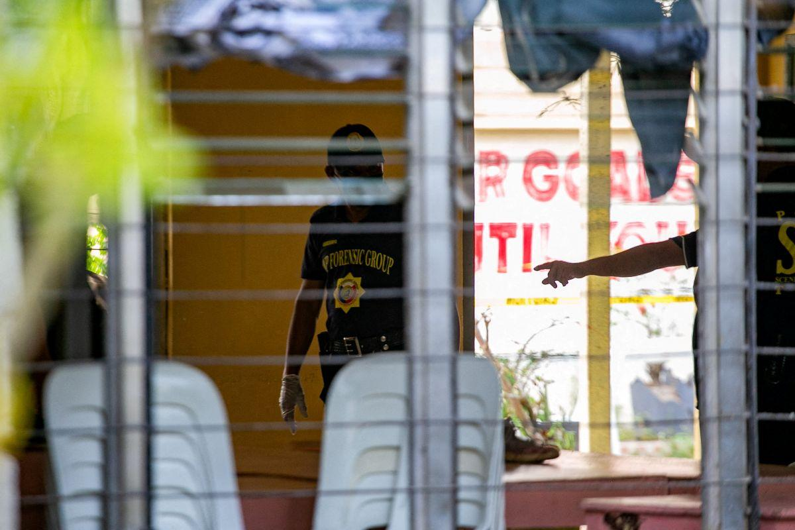
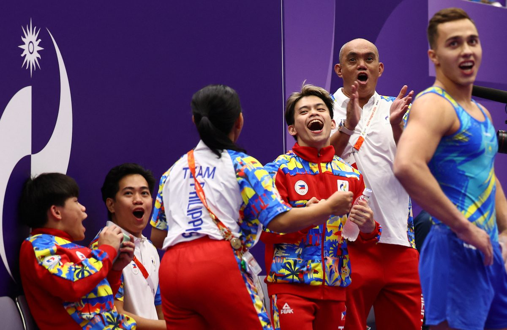
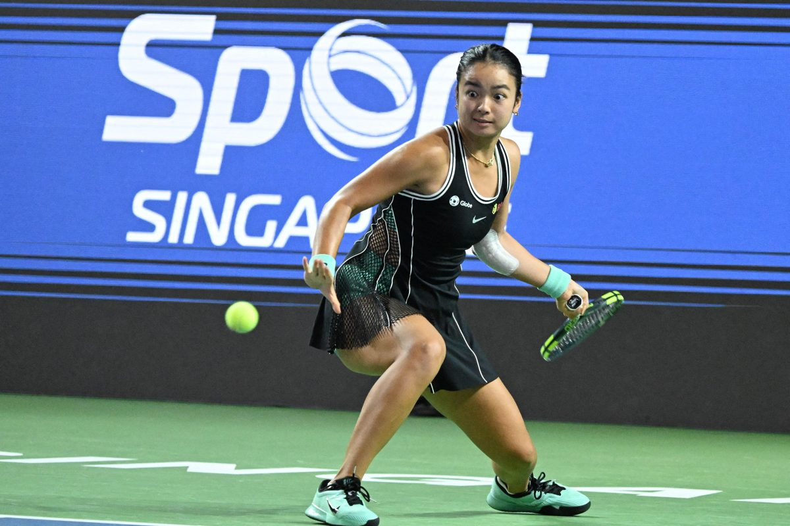
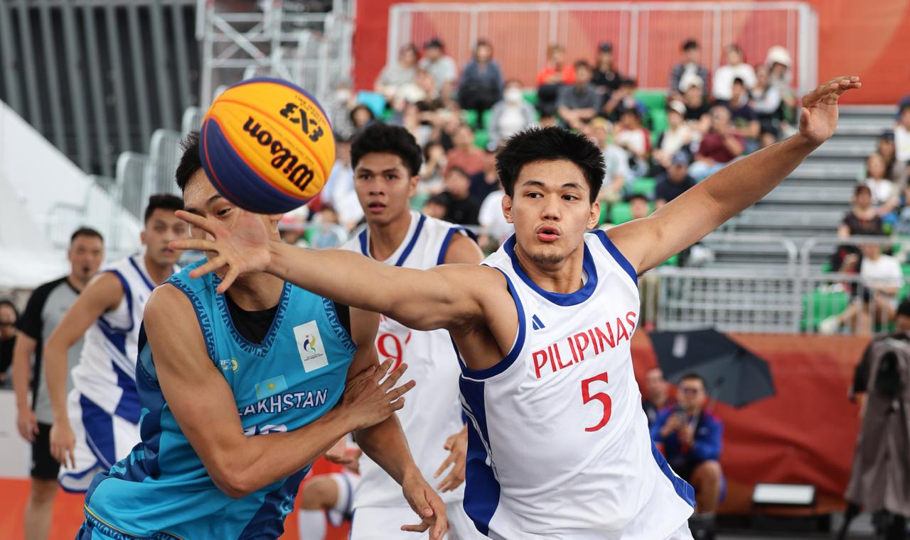

Pezeshkian at UN: never bend the knee; Hormuz not leverage
23–25 Sep 2026
AFP / Manila Times: Iran’s Masoud Pezeshkian told the Assembly Tehran will never “bow our heads or bend at the knee,” accused Washington of “terrorism” over the killing of Ali Khamenei, and said Hormuz will not be used as leverage while pressure continues. He made little reference to the mediated talks Trump had hailed a day earlier. Visa for the president landed; several aides were denied.
Open Manila Times
Netanyahu UN speech: delegates walk out; Mamdani clash
24 Sep 2026
Reuters: Dozens of delegates left the hall as Benjamin Netanyahu began; he called them “moral cowards,” attacked New York Mayor Zohran Mamdani, Qatar, Turkey, and European leaders, and held up a pager and a Starlink unit. Campaign-style address less than five weeks from Israeli elections. Street protests near the UN; ICC warrant still bars travel to many states.
Open TBS / Reuters

Judge restores CNN, MS NOW, Politico White House access
24 Sep 2026
NBC: U.S. District Judge Timothy Kelly ordered a 14-day reinstatement of hard passes after Trump’s ban, calling the revocation likely unconstitutional for lack of due process. Outlets were still turned away Thursday morning; access returned in the afternoon after a further court push. White House had cited security and “fake news”; Kelly said Trump’s own words focused on negativity of coverage.
Open NBC

Zelenskyy at UN: fighters from 47 countries; harsh winter
23–24 Sep 2026
AFP / assembly desk: Volodymyr Zelenskyy said Russia is using nationals from 47 countries in the war and urged those states to stop the pipeline. He warned of a harsh winter and said Ukraine would make it painful for Russia in return — same UN week as the revenue-choke and Black Sea maritime-truce tracks.
Open Manila Times (AFP wire)

Remulla: Banga shooter recruiter identified; parents watch online
23 Sep 2026
GMA: DILG Sec. Jonvic Remulla said recruiters who preyed on the minor in the Sept. 18 Banga, South Cotabato school shooting are in the Philippines — one caught, another being chased. He linked exposure to deep-web glorification of violence and floated Australia-style limits on minors’ social access. Parent ask: watch chats, communities, and glorification cues after Tacloban, Zamboanga, and Cotabato too.
Open GMA

DepEd School Digital Safety Campaign: pilot then nationwide
21–23 Sep 2026 (live desk)
Newsbytes / DepEd: Sec. Sonny Angara’s campaign for learners, teachers, and parents covers cyberbullying, grooming/OSAEC, scams, privacy, gaming, violent content, screen time, warning signs, and reporting — with age-appropriate learner materials and parent guidance on talking, boundaries, and when to escalate. Pilot in selected schools before nationwide rollout; pairs with Kaagapay and physical security upgrades after recent school shootings.
Open Newsbytes

Asiad gym: Yulo floor gold; vault and bars finals today
24–25 Sep 2026
Rappler / Spin: Carlos Yulo won men’s floor gold (14.666) — PH’s first gold of Nagoya 2026 and the missing major title in his case. Eldrew finished seventh on floor (12.233). Today from ~2:00 p.m. PH: Carlos on vault and parallel bars; Eldrew on horizontal bar. Team finished sixth earlier in the week.
Open Rappler

Eala falls to Prozorova in Singapore R16 marathon
24 Sep 2026
WTA / GMA: World No. 180 Tatiana Prozorova beat No. 3 seed Alex Eala 4-6, 7-5, 6-3 in 3h09 — first Top-20 win for Prozorova after trailing a set and 4-2. Eala’s first loss to a player outside the Top 100 in a year. Next for Eala: Asian Games tennis in Nagoya from Sep 27.
Open WTA

Gilas Men 3×3 stun Chinese Taipei; semis locked
24 Sep 2026
GMA: Luis Pablo’s layup with 15 seconds left sealed 21-19 over defending champion Chinese Taipei at Kinjo Futo. Nic Cabañero had eight; Pablo six and six boards. Semis vs South Korea or China — a win puts PH on the podium for its first Asiad 3×3 medal. Women also reached semis (beat Singapore 22-12).
Open GMA
Starship Flight 14 WDR done; NET Sep 28 first orbital try
24 Sep 2026
Space.com: Full-stack wet dress rehearsal ran Thursday at Starbase Pad 2 (Booster 21 / Ship 41). Public target remains Monday 28 Sep, window opening 8:15 a.m. EDT (~8:15 p.m. PH), ~75 minutes, pending regulatory approval — profile ~six orbits, 26 Starlink V3, Pacific splashdown, Super Heavy Gulf landing. Gate is still license, weather, and range.
Open Space.com
Apple exploring screenless Whoop-style fitness band
22 Sep 2026
TechCrunch / Bloomberg: Apple is in a “technology investigation” on a thin fabric band with a sensor module aimed at Whoop’s lane — prototypes exist; ship date no earlier than 2028. Separate from Watch Series / Ultra lines. Whoop valuation recently cleared $10B. Still the clearest new form-factor signal on the fitness-tech board this week.
Open TechCrunch